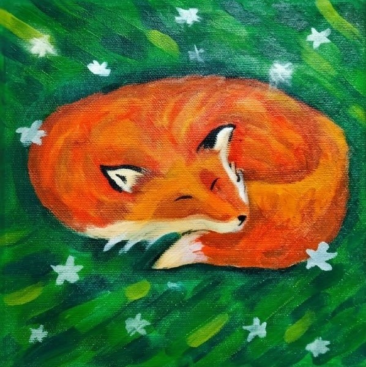
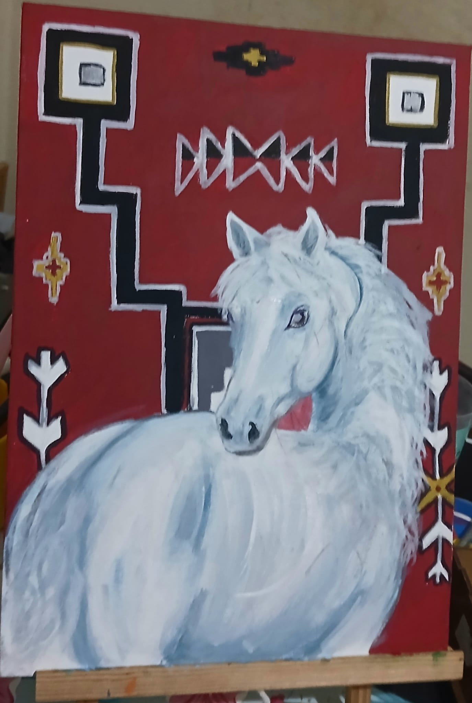
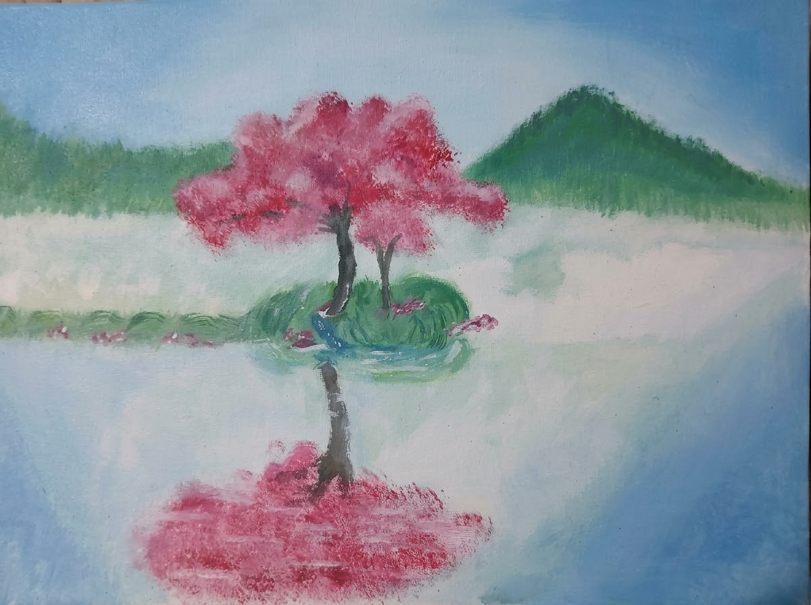
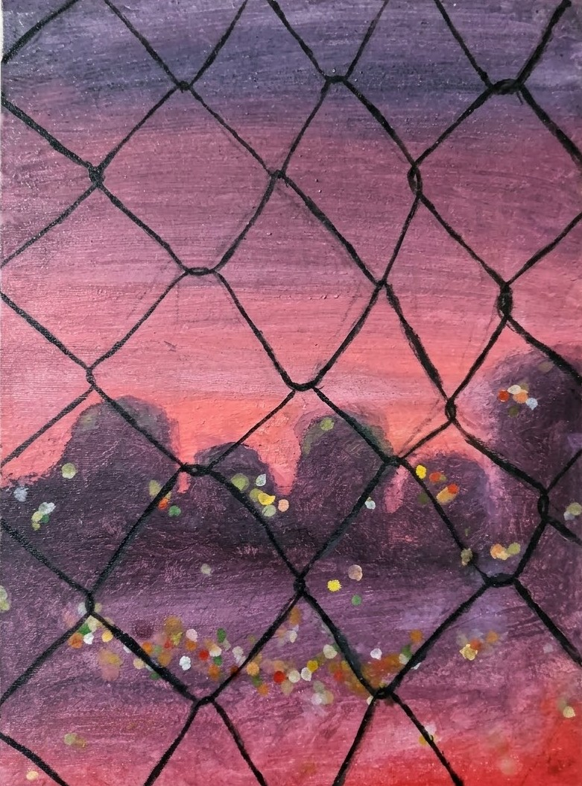
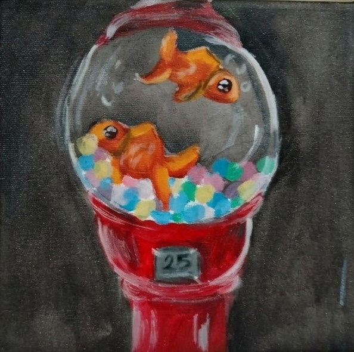

Dost Melankolisi
Sevdiğim birinin beni kızıl tilkiye benzetmesiyle ortaya çıkan dostluk ve içsel dinginlik temalarını işleyen bir çalışma.
İllüstrasyon & Çizim

Sevdiğim birinin beni kızıl tilkiye benzetmesiyle ortaya çıkan dostluk ve içsel dinginlik temalarını işleyen bir çalışma.

Türk kültürüne ait geometrik ve sembolik öğeleri çağdaş anlatımla buluşturan özgün bir yapıt. Anneannemin isteği üzerine hayata geçirilen eser, geçmişten gelen değerlerin bugüne taşınan asaletini vurgular.

Ağaçların ve sakin su yüzeyinin yarattığı dengeyi, yansımadaki bu bilinçli eksiklikle bozan özgün bir kompozisyon. Doğanın yalın atmosferi içinde algı ve iz bırakma temalarını işleyen bir eser.

Tel örgünün ardında kalan ışık izleri,derinlik ve sessizlik içinde bir merak duygusu.

Tanıdık bir nesneyi beklenmeyen kurguyla buluşturmak.